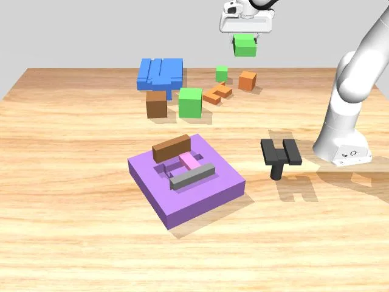

新论文 · 日期 2026-06-04 · score 14 · cs.GR, cs.CV, cs.LG
作者：Hongyu Zhou, Zorah L\"ahner
评分 9/10
3DGS三维重建几何表示透明物体
一句话工作总结：通过给每个 Gaussian 增加独立几何不透明度，缓解 3DGS 外观渲染与几何表面表达之间的冲突。
该工作指出标准 3DGS 天然不适合同时表达纹理外观和准确几何，直接提取表面信息常会牺牲渲染质量。作者为每个 splat 增加独立的几何不透明度参数，并配合透明区域优化流程，使 appearance opacity 与 geometry opacity 分离，从而在多类数据、尤其透明物体场景中同时提升渲染和几何表现。
After the success of 3D Gaussian Splatting (3DGS) for novel view synthesis, many works have explored how to also use it for geometric surface representation. However, extracting accurate geometric information…
新论文 · 日期 2026-06-04 · score 9 · cs.GR, cs.AI, cs.CV, cs.LG
作者：Guangda Ji, Qimin Chen, Qinchan Li, Mingrui Zhao, Kai Wang, Hao Zhang
评分 7.4/10
3D生成对称性Voxel Latent结构约束
一句话工作总结：在 3D 生成的潜空间中施加旋转/反射等对称约束，使生成几何更符合结构要求。
SymTRELLIS 面向单图三维生成中的结构对称性问题，在不重训底层 TRELLIS.2 VAE 或 flow model 的情况下，学习空间变换在体素潜变量上的线性近似，并在生成 ODE 过程中对对称等价变换的速度进行平均。方法可自动估计或由用户指定对称群，在严格对称物体基准上明显降低对称误差。
Single-view 3D generative models have achieved impressive visual quality, yet they are not designed to satisfy structural or functional requirements, and in practice, often fall short. Symmetry is one such req…

新论文 · 日期 2026-06-04 · score 8 · cs.CV, cs.AI, cs.CL, cs.LG
作者：Boyuan Xiao, Bohong Chen, Yumeng Li, Ji Feng, Yao-Xiang Ding, Kun Zhou
评分 6.6/10
具身智能场景图视觉导航VLM/VLA
一句话工作总结：用场景图和分步焦点计划帮助具身智能模型在导航/操作中关注真正任务相关的对象。
该论文关注具身视觉语言决策中 VLM/VLA 因无法区分任务相关目标和干扰物而产生的视觉幻觉。SceneDiver 先构建整体场景图，再通过识别、理解和分析的迭代过程生成由粗到细的 focus plan，并把这种能力蒸馏到轻量 VLA 适配器中，以提升机器人操控和导航任务中的关键物体聚焦能力。
In embodied vision-language decision making tasks such as robotic manipulation and navigation, Vision-Language and Vision-Language-Action Models (VLMs & VLAs) are powerful tools with different benefits: VLMs a…
新论文 · 日期 2026-06-04 · score 8 · cs.CV, cs.AI, cs.GR, cs.LG
作者：Omer Dahary, Benaya Koren, Daniel Garibi, Daniel Cohen-Or
评分 3/10
扩散模型图像生成多样性弱相关
一句话工作总结：通过在扩散 Transformer 的上下文注意力空间中加入排斥项提升文本到图像生成多样性。
论文研究文本到图像扩散模型的典型性偏置，提出在多模态注意力通道的 contextual space 中进行 on-the-fly repulsion，使生成轨迹在已有结构信息但构图尚未固定时被重定向，从而在保持视觉质量和语义一致性的同时提升多样性。
Modern Text-to-Image (T2I) diffusion models have achieved remarkable semantic alignment, yet they often suffer from a significant lack of variety, converging on a narrow set of visual solutions for any given p…

新论文 · 日期 2026-06-04 · score 7 · cs.CV, eess.IV
作者：Lixuan Chen, Zhongnan Liu, Jesse Hamilton, James M. Balter, Jeong Joon Park, Liyue Shen
评分 3.2/10
医学影像动态3D重建运动跟踪弱相关
一句话工作总结：用离线学习的低维运动潜流形加速动态 3D MRI 的在线重建与运动估计。
PDMR 面向 MRI 引导放疗等低延迟场景，先离线学习低维运动场潜流形，再在在线阶段用 tri-plane 表示快速适配变形向量场，从稀疏当前测量中完成动态三维 MRI 重建和运动估计。实验显示其在数字体模和腹部 MRI 上取得高保真、时间一致的重建结果。
Prospective reconstruction is crucial in many clinical applications such as MRI-guided radiotherapy, which demands accurate image reconstruction and fast motion estimation from currently acquired measurements.…
新论文 · 日期 2026-06-04 · score 7 · cs.CV, cs.LG, eess.IV
作者：Gandhimathi Padmanaban, Fred Feng
评分 2.8/10
道路视频车辆分类开源工具弱相关
一句话工作总结：构建检测加 ViT 分类的开源道路视频车辆细分类流水线，并用 abstention 处理不确定预测。
该工作面向道路视频中的车辆车身类型识别，先用预训练 RT-DETR 做粗粒度车辆检测，再用微调 ViT 进行六类车身分类，并通过置信度阈值输出 unknown 以避免静默误分类。在自行车道超车事件数据和外部分布数据上进行了验证，并发布开源推理、训练和评估工具。
Vehicle body type is a significant determinant of cyclist injury severity in overtaking crashes, yet automated tools for classifying vehicles into injury-risk-relevant categories from naturalistic roadway vide…
新论文 · 日期 2026-06-04 · score 6 · cs.RO, cs.DC, cs.LG, cs.SY
作者：Pragya Sharma, Brian Wang, Mani Srivastava
评分 7.2/10
协同自治V2X自动驾驶系统评测
一句话工作总结：提供可复现实验平台来评估 V2V/V2I/边缘云部署对自动驾驶协同感知与控制安全性的影响。
CADET 将自动驾驶感知、规划和控制栈拆成可组合模块，可灵活部署在车辆、路侧基础设施、边缘和云端，并结合 trace-driven 网络/负载仿真与同步指标记录。论文通过 V2V/V2I 实验说明不同分布式部署策略会显著改变安全性，例如 V2V intent packets 优于云端感知，RSU 感知在过载前能维持安全。
Deep learning models are increasingly central to autonomous vehicle (AV) pipelines, yet their integration has traditionally followed a monolithic design where perception, planning, and control execute on a sin…
新论文 · 日期 2026-06-04 · score 6 · cs.RO, cs.AI, cs.SY, eess.SY
作者：Faryal Batool, Muhammad Ahsan Mustafa, Fawad Mehboob, Valerii Serpiva, Dzmitry Tsetserukou
评分 7/10
UAV导航Diffusion Planning开放词汇多视角
一句话工作总结：把多视角观察、语义目标定位、扩散规划和 NMPC 组合成视觉 UAV 导航流程。
AgenticDiffusion 面向室内 UAV 导航，将语言引导推理、开放词汇目标 grounding、视觉扩散规划和 NMPC 统一起来。系统利用同步 FPV 与 top-view 观察选择最有信息量的视角并生成任务计划，再由视角特定 diffusion planner 生成可执行轨迹；真实 UAV 实验中报告 80% 任务成功率和 100% 轨迹生成成功率。
Indoor UAV navigation requires efficient exploration, scene understanding, and reliable trajectory execution under limited field-of-view observations. Existing vision-based navigation frameworks typically rely…
新论文 · 日期 2026-06-04 · score 6 · eess.IV, cs.AI, cs.CV, physics.med-ph
作者：Arda Atal{\i}k, Sumit Chopra, Daniel K. Sodickson
评分 2.5/10
医学影像MRI重建纵向先验弱相关
一句话工作总结：利用同一患者历史 MRI 作为纵向先验来改善快速 MRI 欠采样重建。
该论文利用随访检查中的纵向先验来缓解快速 MRI 欠采样重建的病人个性化问题，目标是在少量测量下恢复诊断质量图像。方法从既往扫描中提取结构先验并融入重建网络，以提升同一患者后续检查的重建质量。
MRI provides excellent soft-tissue contrast without ionizing radiation, but long acquisition times increase patient discomfort while also raising exam costs and limiting scanner throughput. A common approach t…
新论文 · 日期 2026-06-04 · score 6 · cs.AI, cs.CL, cs.CV, cs.LG
作者：Amirhossein Dabiriaghdam, Shayan Vassef, Mohammadreza Bakhtiari, Yasamin Medghalchi, Ilker Hacihaliloglu, Mesrob Ohannessian, Lele Wang, Giuseppe Carenini
评分 2.2/10
多模态基准可视化推理数学弱相关
一句话工作总结：提出一个测试多模态模型借助可视化工具解决数学问题的基准。
VAMPS 研究多模态大模型在需要调用可视化工具并基于工具输出继续推理时的能力差距，构建了视觉辅助数学问题求解基准，用于衡量模型在外部化问题、读图和综合推理中的表现。
Multimodal large language models are increasingly capable of complex reasoning, yet their performance often degrades when they must externalize a problem through a tool and then reason over the tool's output,…
新论文 · 日期 2026-06-04 · score 6 · cs.AI, cs.CL, cs.CV, cs.ET
作者：Feiyang Kang, Hanze Li, Adam Nguyen, Mahavir Dabas, Jiaqi W. Ma, Frederic Sala, Dawn Song, Ruoxi Jia
评分 1.8/10
数据策展AI Agent基准弱相关
一句话工作总结：用基准评估编程智能体自动迭代数据策展策略的能力。
论文提出 Curation-Bench，用固定模型、训练配方和评估套件考察通用编程智能体是否能自动提出、实现、评估和修订数据策略，从而自动化训练数据策展循环。
Curating training data is among the most consequential yet labor-intensive parts of modern AI development: practitioners iteratively propose, implement, evaluate, and revise data policies against noisy benchma…
新论文 · 日期 2026-06-04 · score 6 · eess.SY, cs.MA, cs.RO, cs.SY
作者：Abdullah Y. Etcibasi, C. Emre Koksal, Eylem Ekici
评分 4.5/10
网络控制AoILQR协同系统
一句话工作总结：研究网络控制中信息更新时间分布而非平均 AoI 对 LQR 闭环性能的影响。
该论文从控制理论角度分析 Age of Information 指标是否足以代表闭环 LQR 性能，指出仅最小化均值 AoI 不一定最优，并提出分布感知的信息新鲜度刻画来更好地关联无线更新系统与控制性能。
Age of Information (AoI) has become a central metric for the design of wireless update systems, especially in applications where fresh measurements support tracking, estimation, and control. Despite its popula…
新论文 · 日期 2026-06-04 · score 6 · math.OC, cs.AI, cs.RO
作者：Eleanor Brosius, Yuji Takubo, Daniele Gammelli, Simone D'Amico, Marco Pavone
评分 5.2/10
轨迹优化LLM语义约束规划
一句话工作总结：用 LLM 将任务语义转成轨迹优化约束，支持自适应规划问题构建。
论文面向空间任务中的轨迹优化，将任务意图转化为数学上合理、可求解的轨迹优化约束。方法利用大语言模型从语义描述中生成或调整约束，旨在减少人工公式化任务目标和运行限制的成本。
Trajectory optimization is a critical component for enabling safe and reliable autonomous operations in space exploration. As space missions increase in frequency, complexity, and scope, there is a growing nee…
新论文 · 日期 2026-06-04 · score 5 · cs.RO
作者：Amirhossein Mollaei Khass, Vivek Pandey, Guangyi Liu, Athanasios Cosse, Emrah Bayrak, Nader Motee
评分 8.7/10
SLAM多机器人NBV3DGS风险规划
一句话工作总结：用局部 3DGS 地图、分布式 ADMM 和风险度量实现多机器人安全主动建图视角选择。
该论文提出分布式风险感知多机器人 NBV 框架，每个机器人维护私有局部 3D Gaussian Splatting 地图，并在计划轨迹附近的 masked zones 上联合最大化期望信息增益。目标通过通信图上的 Consensus ADMM 求解，只交换候选视点、轨迹描述和标量信息增益，同时用 AV@R 在局部 3DGS 地图上建模碰撞风险。
Multi-agent Next-Best-View (NBV) selection for safe path planning in uncertain and unknown environments requires informative, safety-aware, and efficient coordination. Centralized approaches rely on sharing ra…
新论文 · 日期 2026-06-04 · score 5 · eess.IV, cs.MM
作者：Chentian Sun
评分 8.3/10
多视角重建点云融合外参标定实时系统
一句话工作总结：通过解耦外参标定和置信度点云融合，实现可扩展的实时多视角三维重建。
FUSE-Flow 将实时多相机三维重建拆为 GMAC 外参标定和 FUSE 点云融合两个协作模块。GMAC 利用几何约束和多视角重建 transformer 在无需标定板、密集图像或全局 BA 的情况下细化外参；FUSE 使用置信度加权和自适应空间哈希进行无状态融合，以线性时间和内存实现可扩展实时点云重建。
Real-time multi-camera 3D reconstruction is a key foundation for immersive media, remote interaction and spatial computing. While synchronized camera arrays are widely adopted, achieving geometrically consiste…
新论文 · 日期 2026-06-04 · score 5 · eess.SP, cs.CV
作者：Zijian Kang, Weiming Zeng, Yueyang Li, Shengyu Gong, Hongjie Yan, Wai Ting Siok, Nizhuan Wang
评分 1.8/10
EEG扩散模型超分辨率弱相关
一句话工作总结：用拓扑引导扩散模型从稀疏 EEG 恢复密集通道。
TGSD 面向低密度 EEG 到高密度 EEG 的空间超分辨率，利用电极布局拓扑和状态空间/扩散建模恢复缺失通道，目标是提升可穿戴与 IoT 脑电系统的空间表征能力。
Low-density EEG is more suitable for wearable and IoT-based brain sensing, but sparse electrode sampling often lacks sufficient spatial information to characterize cross-regional neural activity. EEG spatial s…
新论文 · 日期 2026-06-04 · score 5 · eess.SP, cs.IT, math.IT
作者：Zhentian Zhang, Kai-Kit Wong, Kaitao Meng, David Morales-Jimenez, Hao Jiang, Christos Masouros, Hyundong Shin, Zaichen Zhang
评分 3/10
无线通信信道重建贝叶斯推断几何结构
一句话工作总结：利用无线信道的几何结构减少多端口天线系统的信道重建成本。
论文研究流体天线系统中大量候选端口位置的 CSI 获取问题，利用信道在空间上的几何结构，通过贝叶斯推断和理论界分析减少直接逐端口估计的导频开销。
Accurate channel state information (CSI) acquisition is critical for exploiting the spatial flexibility of fluid antenna systems (FASs). However, port selection and transmission optimization require CSI over a…
新论文 · 日期 2026-06-04 · score 5 · cs.LG, math.OC
作者：Ismail Hassaballa, Mircea Lazar
评分 4/10
物理先验混合模型控制复杂系统
一句话工作总结：把物理模型编码进模块化混合神经层，以更稳健地学习复杂控制系统。
PE-MHL 将物理模型和数据驱动组件组合成模块化混合层，在控制应用中提高复杂系统学习的可解释性、抗噪性和可扩展性。框架用 baseline physics-based model 约束学习结构，并控制模型复杂度。
Hybrid models that combine physics-based and data-driven components have shown strong potential for achieving accuracy and interpretability in control applications. While recent methods have made progress in i…
新论文 · 日期 2026-06-04 · score 4 · cs.CV, cs.LG
作者：Shimon Malnick, Matan Rusanovsky, Ohad Fried, Shai Avidan
评分 2.5/10
Flow Matching最优传输生成模型弱相关
一句话工作总结：为 flow matching 模型设计近似最优传输轨迹以提升生成效率。
该论文研究 flow matching 生成模型中的 optimal transport coupling 问题，提出绕开高维 OT 直接求解的一种设计方法，以获得更直、更少交叉且可快速生成的传输轨迹。
Flow matching models learn to transport samples from a simple prior distribution to a complex data distribution. When prior-data pairs are coupled via optimal transport (OT), the learned trajectories are strai…
新论文 · 日期 2026-06-04 · score 4 · cs.GR, cs.CV
作者：Pedro Figueiredo, Zixuan Li, Beibei Wang, Milo\v{s} Ha\v{s}an, Nima Khademi Kalantari
评分 5.4/10
神经渲染光照Relighting图形学
一句话工作总结：通过 light tracing 和分布学习估计复杂灯具的出射外观。
PureLight 关注具有复杂光传输的灯具外观估计，例如小发光体被多个镜面层包围的情形。方法用 light tracing 构造从发光体到出射面的路径，并把外观估计表述为分布学习问题，以更好模拟难以用传统双向路径追踪处理的复杂光照。
We propose a neural formulation for estimating the appearance of complex luminaires. We focus on challenging luminaires with complex light transport (e.g., small emitters enclosed by multiple specular layers)…
新论文 · 日期 2026-06-04 · score 4 · cs.MM, cs.CV, cs.GR
作者：Yuxuan Bian, Zeyue Xue, Songchun Zhang, Shiyi Zhang, Weiyang Jin, Yaowei Li, Junhao Zhuang, Haoran Li, Jie Huang, Haoyang Huang, Nan Duan, Qiang Xu
评分 2.4/10
视频生成记忆机制自回归弱相关
一句话工作总结：用可学习演化记忆让自回归视频生成在长时序下保持固定成本。
Echo-Infinity 是自回归视频生成框架，用可学习的演化记忆在固定成本下动态过滤、抽象和压缩任意长度历史，以缓解无限视频生成中的历史信息丢失和误差累积。
We present Echo Infinity, an autoregressive (AR) framework towards real-time infinite video generation that employs a learnable evolving memory to dynamically filter, abstract, and compress any-length history…
新论文 · 日期 2026-06-04 · score 4 · cs.CV, cs.GR
作者：Weiyu Li, Antoine Toisoul, Tom Monnier, Roman Shapovalov, Rakesh Ranjan, Ping Tan, Andrea Vedaldi
评分 6.3/10
Mesh3D生成Diffusion Transformer重建后处理
一句话工作总结：用 MeshVAE 加 flow diffusion transformer 高效生成连续坐标的三维网格。
MeshFlow 针对现有自回归网格生成方法在大网格上推理成本高、坐标离散带来量化误差的问题，引入 MeshVAE 与基于 flow 的 Diffusion Transformer 来生成 artist-like 3D meshes，以提升网格生成效率和连续几何质量。
We present MeshFlow, a new method for generating artist-like 3D meshes. Current mesh generators often adopt Auto-Regressive (AR) next-token prediction, a natural choice given the discrete nature of mesh topolo…
新论文 · 日期 2026-06-04 · score 4 · eess.IV, cs.LG
作者：R. Spencer Hallyburton, David Hunt, Miroslav Pajic
评分 6.8/10
数据集多传感器多智能体CARLA
一句话工作总结：用 AVstack 和 CARLA 生成大规模多传感器多智能体自治系统真值数据。
该论文提出基于 AVstack 和 CARLA 的模块化数据生成管线，用于生成 TB 级带真值数据，覆盖地面、空中和基础设施系统。管线支持单/多智能体配置和灵活传感器套件，可用于可控条件下的感知、融合和协同自治实验。
Existing datasets cannot support large-scale learning in multi-agent, multi-sensor, or multi-domain autonomy, where diversity and coordination are essential. We present a modular dataset generation pipeline th…
新论文 · 日期 2026-06-04 · score 4 · cs.AI, cs.LG, cs.SE
作者：Thanh Luong Tuan, Abhijit Sanyal
评分 1.8/10
AI Agent验证本体弱相关
一句话工作总结：构建企业 AI agent 部署前验证与认证框架。
论文提出企业 AI agent 部署前验证框架，将 Agent Operational Envelope、场景仿真和信任认证结合起来，以在上线前发现风险和行为边界，而不是仅依赖上线后的监控或人工兜底。
Pre-deployment verification of enterprise artificial intelligence (AI) agents remains a critical gap between large language model (LLM) capability benchmarking and production deployment. Post-deployment monito…
新论文 · 日期 2026-06-04 · score 4 · cs.LG, cs.AI, q-bio.QM
作者：Afshan Hashmi
评分 1.4/10
医学机器学习分类无关
一句话工作总结：用可解释 XGBoost 基于临床指标进行阿尔茨海默病多分类检测。
该研究使用 ADNI 数据集中的临床特征训练 XGBoost，对正常认知、轻度认知障碍和阿尔茨海默病进行三分类，并强调可解释性分析。
Background: Alzheimer's disease (AD) affects over 55 million people worldwide. Accurate, interpretable detection of normal cognition (NC), mild cognitive impairment (MCI), and AD from routine clinical assessme…
新论文 · 日期 2026-06-04 · score 4 · cs.LG, cs.AI
作者：Parnian Behdin, Kevin Roice, Golnaz Mesbahi
评分 2.8/10
强化学习持续学习部署弱相关
一句话工作总结：主张现实部署的强化学习系统应在交互中持续学习而非固定不变。
论文认为现实部署中的强化学习系统不应停留在 train-then-fix 范式，因为智能体在运行中仍会接收奖励信号且环境会变化，因此部署后无法持续学习会带来性能退化和再训练成本。
Reinforcement Learning (RL) has received increasing attention and adoption in real-world use cases. Most of these systems follow a train-then-fix paradigm, where trained agents do not learn while interacting w…
新论文 · 日期 2026-06-04 · score 4 · cs.LG, math.OC, stat.ML
作者：Ahanaf Hasan Ariq
评分 2.4/10
优化理论伪谱梯度下降弱相关
一句话工作总结：用伪谱理论刻画耦合梯度下降在收敛前可能出现的瞬态放大。
论文研究双层优化、两时间尺度随机逼近和对抗训练中常见的耦合梯度下降，当耦合 Jacobian 为块三角时，虽然渐近稳定性由对角块谱半径控制，但非正规性可导致收敛前巨大瞬态放大；作者给出相应伪谱理论界。
Coupled gradient descent--where the update of one parameter block depends on another--underlies bilevel optimization, two-time-scale stochastic approximation, and adversarial training. When the coupled Jacobia…
新论文 · 日期 2026-06-04 · score 4 · cs.LG, cs.AI, cs.CL, cs.PF
作者：Ali Kayyam, Anusha Madan Gopal, M Anthony Lewis
评分 1.8/10
Transformer注意力模型结构弱相关
一句话工作总结：系统评估 Transformer 注意力中 QKV 投影共享/简化的影响。
论文系统比较 Transformer 注意力中 Q、K、V 三个投影的共享或省略变体，包括共享 key-value、共享 query-key 和单投影设置，分析不同约束对模型表现的影响。
Transformers have become the standard solution for various AI tasks, with the query, key, and value (QKV) attention formulation playing a central role. However, the individual contribution of these three proje…
新论文 · 日期 2026-06-04 · score 4 · cs.LG, cs.AI
作者：Vasileios Sevetlidis
评分 2/10
表示学习Bayes决策理论弱相关
一句话工作总结：从 Bayes 决策角度形式化监督学习中什么表示是充分的。
该论文从固定监督决策问题出发定义 Bayes-sufficient representation，讨论表示应保存哪些对 Bayes 最优动作规则必要的信息，并强调相关信息依赖损失函数。
Representation learning is often described as preserving the information in an input that is relevant for prediction. This work asks what relevance means for a fixed supervised decision problem. A representati…
新论文 · 日期 2026-06-04 · score 4 · eess.SP, cs.AI
作者：Yan Wu, Yang Yang, Jun Fan, Bin Wang
评分 3.8/10
神经场三维场景水下航行器声学
一句话工作总结：用神经场连续预测 UUV 在三维场景中的辐射噪声谱。
论文提出 Neural Radiated-Noise Fields，用于在三维场景中连续建模无人水下航行器辐射噪声的空间谱响应，降低传统物理仿真对结构信息和环境边界条件的依赖。
Radiated noise in unmanned underwater vehicles (UUVs) is an important indicator for characterizing acoustic signatures and evaluating platform performance. To address the strong dependence of traditional physi…
新论文 · 日期 2026-06-04 · score 4 · eess.SP, cs.AI
作者：Hao Li, Mingrui Zheng, Yasuyuki Tahara, Yuichi Sei
评分 2.5/10
传感器IMU人体活动识别弱相关
一句话工作总结：为轻量传感器语言模型加入重力感知路由以提升人体活动识别。
论文研究可穿戴传感器到语言模型对齐框架在轻量化后对重力相关运动的识别失效问题，提出 gravity-aware hierarchical routing 来改善压缩 SensorLLM 在人体活动识别中的表现。
Recent studies on sensor-language alignment have shown that two-stage frameworks can improve the semantic modeling ability of wearable-sensor human activity recognition (HAR), where SensorLLM-style methods fir…
新论文 · 日期 2026-06-04 · score 4 · math.OC, cs.LG, cs.NA, math.NA
作者：Daisuke Inoue, Mathieu Lauri\`ere, Dante Kalise
评分 2.6/10
Schrödinger Bridge随机控制平均场弱相关
一句话工作总结：用学习交互降低非局部平均场 Schrödinger Bridge 在大规模粒子系统中的计算成本。
论文研究带非局部交互的平均场 Schrödinger Bridge，用于构造连接初末分布且能量最小的随机过程；为解决粒子系统中分布项计算随粒子数二次增长的问题，引入学习交互近似。
The Schr\"odinger Bridge Problem constructs a stochastic process that connects an initial distribution to a terminal distribution with minimum energy. This work considers its mean-field extension, the Mean-Fie…
新论文 · 日期 2026-06-04 · score 4 · math.OC, cs.LG
作者：Nitai Kluger, Amit Attia, Tomer Koren
评分 3.5/10
分布式优化去中心化网络方法论
一句话工作总结：给出去中心化随机凸优化在网络通信约束下接近集中式统计速率的算法与界。
该论文研究固定 gossip 网络上多个 worker 的去中心化随机光滑凸优化，在总梯度样本预算下分析可使用多少 worker 仍保持集中式统计速率，并提出加速去中心化方法。
We study decentralized stochastic smooth convex optimization, where $M$ workers minimize an average objective using local stochastic gradients and neighbor-only communication over a fixed gossip network. A cen…
新论文 · 日期 2026-06-04 · score 3 · cs.CV
作者：Nika Chuzhoy, Brian Hu, Amit A. Arora, Jae Ro, Sarthak S. Sahu
评分 7.1/10
视觉定位地理定位GPS重定位
一句话工作总结：用图像-GPS 对比嵌入和跨来源重排序从单张图像估计全球地理位置。
Pinpoint 将用户上传照片和街景图像共同用于世界尺度图像地理定位。系统先训练 contrastive image-GPS embedder，把不同来源图像映射到共享图像-GPS 空间以检索候选位置，再用 attention-based reranker 融合候选视觉/GPS 特征和附近跨来源证据，最终在互联网照片和街景基准上取得 SOTA。
Image geolocation aims to estimate where a photograph was taken from its visual content. At worldwide scale, this remains challenging because visual evidence is often ambiguous, diverse, and unevenly distribut…
新论文 · 日期 2026-06-04 · score 3 · cs.CV
作者：Benjamin Kiessling (ALMAnaCH)
评分 1.5/10
OCR文档分析文本行检测无关
一句话工作总结：把文档文本行检测和阅读顺序估计统一成端到端模型。
Orli 将历史文档版面分析中的文本行检测和阅读顺序估计合并为端到端模型，避免检测后再依赖手写几何启发式排序，以更好处理边注、多栏、表格和特定文献格式。
Practical text-recognition pipelines for historical documents typically decompose layout analysis into line detection followed by a separate reading-order step, with the latter most often handled by a hand-cod…
新论文 · 日期 2026-06-04 · score 3 · cs.RO
作者：Tewodros Ayalew, Matthew Jeung, Samuel Wheeler, Xiao Zhang, Andre de la Cruz Arce, Kaylene Stocking, Michael Maire, Matthew R. Walter
评分 5.5/10
世界模型潜动作视觉规划自监督
一句话工作总结：从无动作视频中联合学习潜动作和世界模型，用于观察模仿与目标规划。
CLAW 是从无动作标注视频中端到端自监督学习世界模型和连续潜动作表示的框架。它用对抗潜变量正则和扩散视频生成来捕捉结构化动作表示与环境动态，可用于从观察中模仿学习和目标导向规划。
We introduce CLAW, a fully end-to-end self-supervised framework for learning a world model jointly with continuous latent action representations directly from action-free videos. Our approach leverages adversa…
新论文 · 日期 2026-06-04 · score 3 · cs.RO
作者：Jiarong Wei, Yanxing Chen, Sinuo Song, Yin Wu, Anna Rehr, Abhinav Valada
评分 4.8/10
自动泊车自博弈局部规划自动驾驶
一句话工作总结：用自博弈学习兼顾几何精度和交互安全的自动泊车策略。
CoPark 研究自动泊车中精确到达目标与安全应对其他车辆之间的冲突，利用多车自博弈学习 reactive parking 策略，使车辆在动态交互中既能保持几何精度，又能在其他车辆入侵时安全调整。
Learning a single policy that reaches a goal with high geometric precision while interacting safely with nearby agents poses conflicting objectives. Precision favors commitment to a fixed geometric plan, where…
新论文 · 日期 2026-06-04 · score 3 · cs.RO
作者：Litao Liu, Yifan Han, Pengfei Yi, Wenbo Yu, Hanqing Wang, Haoran Du, Enze Yuan, Zilin Yuan, Ruiding Feng, Michael Liu, Qi Zhang, Jingjin Yu
评分 4/10
机器人操作可供性场景理解实时
一句话工作总结：根据任务指令在场景中实时定位可操作功能区域。
Affordance2Action 面向任务条件操作，要求模型在杂乱场景中根据指令定位功能区域而非物体类别。论文提出场景级 affordance grounding 方法，以处理同一物体在不同任务下可供性不同、同一任务可对应多个区域的情况。
Task-conditioned manipulation requires grounding instructions to task-relevant functional parts rather than object categories. This setting is scene-dependent and often one-to-many in cluttered scenes: the sam…
新论文 · 日期 2026-06-04 · score 3 · eess.IV, physics.app-ph
作者：Jennings Z. Ye, Abrar Amin Khan, Hayden K. Taylor
评分 2/10
增材制造体积成形模糊核弱相关
一句话工作总结：在体积增材制造中识别并优化扩散/断层模糊核以提升打印边界精度。
论文研究计算轴向光刻这一体积增材制造技术中的扩散和断层成像模糊，利用实验核识别并协同优化投影图案，以改善光固化边界质量和成形精度。
Computed Axial Lithography is a volumetric additive manufacturing method that selectively cures photosensitive resin through the 3D superposition of patterns of light, offering advantages over layer-based proc…
新论文 · 日期 2026-06-04 · score 3 · eess.IV
作者：Nordin Belkacemi, Selena Huisman, Vera C. Keil, Joost J. C. Verhoeff, Szabolcs David
评分 2/10
医学影像3D扩散MRI预测弱相关
一句话工作总结：用 3D latent diffusion 根据放疗前信息预测胶质瘤患者后续 MRI 变化。
3D-GlioPREDICT 使用三维潜扩散模型从治疗前 MRI 和放疗信息预测胶质瘤患者放疗后的脑部结构变化，以支持治疗反应分析和图像结局预测。
Radiotherapy is a cornerstone of glioma treatment inducing complex structural changes in brain tissue that are difficult to anticipate. Predicting these changes from pretreatment data could improve understandi…